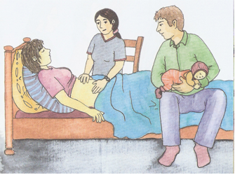

SURVEILLANCE EN CAS D’ACCOUCHEMENT EN AMBULANT
Si vous avez accouché en ambulant et que vous êtes sortie de la maternité le jour même de l’accouchement ou, au plus tard le quatrième jour ( le jour de l’accouchement ne compte pas), vous avez droit à une sage-femme à domicile jusqu’au dixième jour.
Mon travail consiste à vous visiter régulièrement et à contrôler votre état de santé et celui de votre enfant.

(source: Was macht eigentlich eine Hebamme?
Tara R. Franke)
Selon vos besoins je vous informe sur l’allaitement maternel et sur les soins du bébé.
Votre caisse de maladie prend en charge les coûts de ces visites jusqu’aux dixième jour inclus.